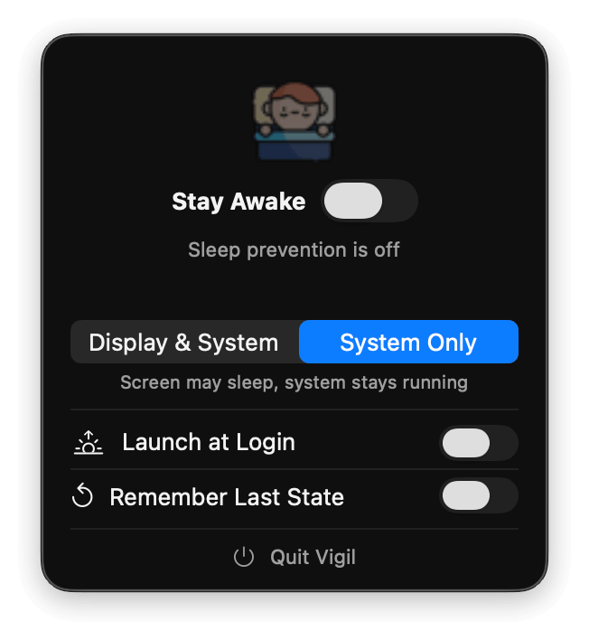
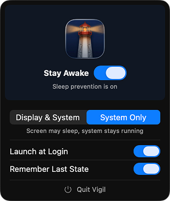

Most sleep prevention tools give you thirty features when all you needed was one click. Vigil is that one click.
macOS 15+ · Apple Silicon & Intel
No dock icon. No clutter. Just a quiet toggle that does exactly what you asked.


No timers. No triggers. No stats. Toggle it on in the menu bar. Done.
Display & System keeps your screen on. System Only lets the display sleep while blocking idle sleep.
Remembers your choice across restarts. Launch at login. Never set it up twice.